iOS (formerly iPhone OS) is a mobile operating system created and developed by Apple Inc.
exclusively for its hardware.
It is the operating system that presently powers many of the company's mobile devices, including the
iPhone, and iPod
Touch; it also powered the iPad prior to the introduction of iPadOS in 2019.
It was originally unveiled in 2007 for the iPhone.
It is the second most popular mobile operating system globally after Android.
It was originally unveiled in 2007 for the iPhone.
It is the second most popular mobile operating system globally after Android.

Android is a mobile operating system based on a modified version of the Linux kernel and other open
source software,
designed primarily for touchscreen mobile devices such as smartphones and tablets. Android is
developed by a consortium
of developers known as the Open Handset Alliance, with the main contributor and commercial marketer
being Google.
Today there's about 73% of all phones using Android in the world.
Today there's about 73% of all phones using Android in the world.